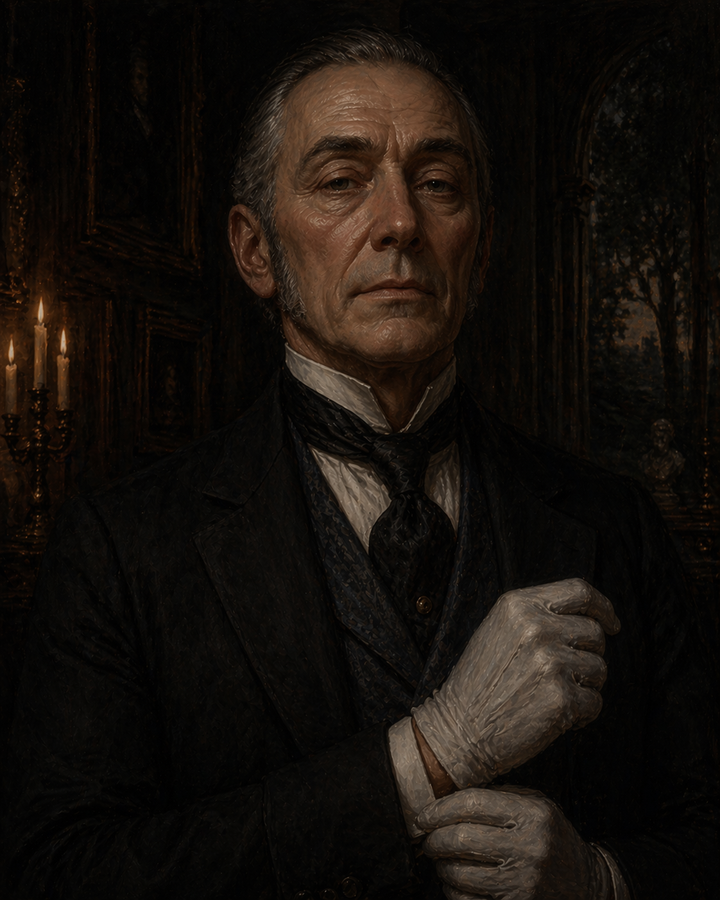

Scurlock's Household
Jeeves
Scurlock's major domo. Precise, formal, and entirely unreadable. The crew's day-to-day point of contact with a man who is using them.
Role
- Major domo to Lord Scurlock
- Delivered Scurlock's first letter to the crew (Session 03)
- Directed the crew to the Valchek warehouse and the train token
- The face of Scurlock's instructions — Scurlock himself is rarely the one who delivers orders directly
Personality
- Precise — his words are chosen carefully and mean exactly what they say
- Formal — always the professional, never off-message
- Unreadable — impossible to tell what he thinks about his employer, the crew, or any of it
Notes
GM Note
Jeeves knows what Scurlock is doing. He has to. The question of whether he is complicit, compelled, or simply does his job without judgment is worth leaving ambiguous. If the crew ever tries to turn him, that ambiguity becomes a lever.